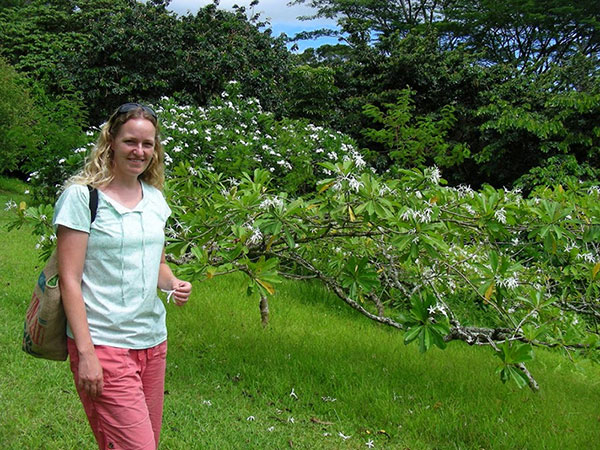
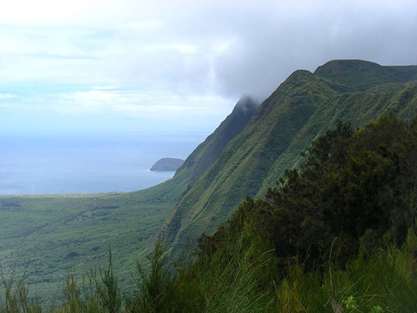
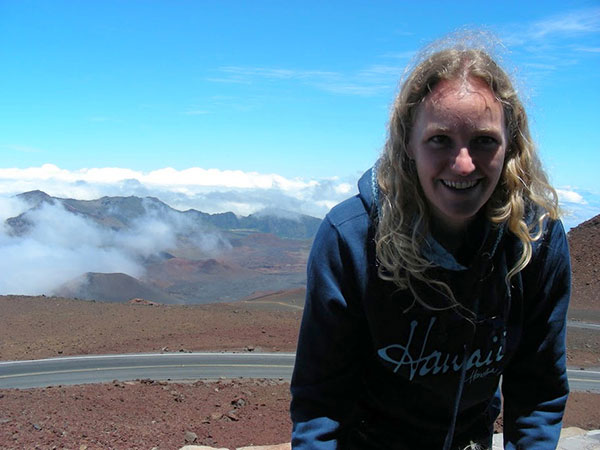
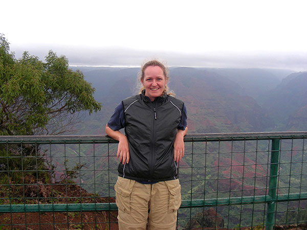
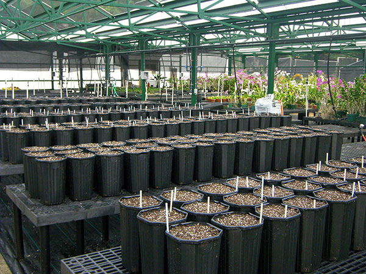
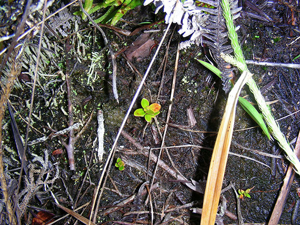
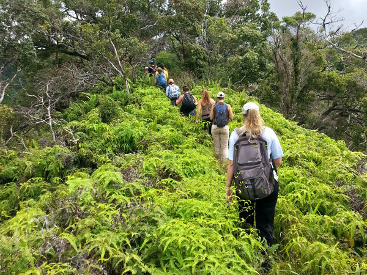

Kasey E. Barton
Professor
School of Life Sciences
University of Hawaiʻi at Mānoa
3190 Maile Way, Room 101
Honolulu, HI 96822
Email:
Publications Drought Tolerance Index Gallery
Research Interests:
In the Barton Lab, we investigate plant functional ecology, focusing on two main questions. First, how do plant traits shift in expression across ontogeny, and how does this influence tolerance to abiotic and biotic stress. Second, are island plants fundamentally different from continental plants, and if so, how does this influence their species interactions and trait syndromes? We primarily work in the Hawaiian Islands, exploring the amazing diversity in the native flora, and our research investigates these questions using experimental, natural, and synthetic approaches. Reflecting diversity in student interests and the range of global threats plants experience, we have examined many different factors, including herbivory, competition, drought, salinity, fire, and heat, aiming to understand how plants tolerate these stressors across ontogeny for insights into plant evolutionary ecology and conservation of island biodiversity.